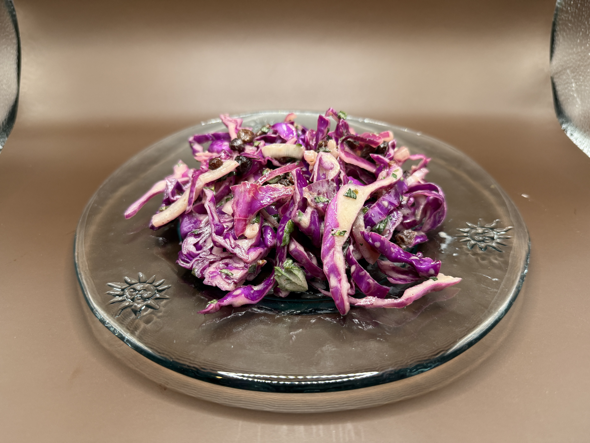

Red Cabbage Slaw with Black Currants & Mint

Description
A coleslaw with bite.
Serves 8-12.
Base Ingredients
- 1 red onion, sliced into thin quarter-moons
- 1 1/2 cups black currants
- 1/2 cup rice wine vinegar
- 1 medium-large head of red cabbage, shredded
- 2 cups fresh mint leaves, coarsely chopped
Dressing Ingredients
- 1/2 cup yogurt
- 2 tablespoons mustard
- 1 tablespoon honey
- 1 teaspoon molasses
- 6 tablespoons extra-virgin olive oil
- juice of 2 lemons
- 2 teaspoons salt
- 1 teaspoon freshly ground black pepper
Steps
- In a small mixing bowl, combine onions, currants, and rice vinegar.
Stir to coat, and set aside 30 minutes.
- Meanwhile, prepare the dressing: combine all ingredients in a jar with a tight lid.
Shake for 10 seconds until fully emulsified.
- In a large mixing bowl, combine cabbage, onions and raisins (with whatever
little vinegar remains in the bowl), and 3/4 cup of the mint. Pour half the dressing
and toss the salad. Taste, and add more dressing as needed.
- Sprinkle remaining mint on top of salad and serve.
Salad can be made and mixed up to 1 hour in advance.
Home